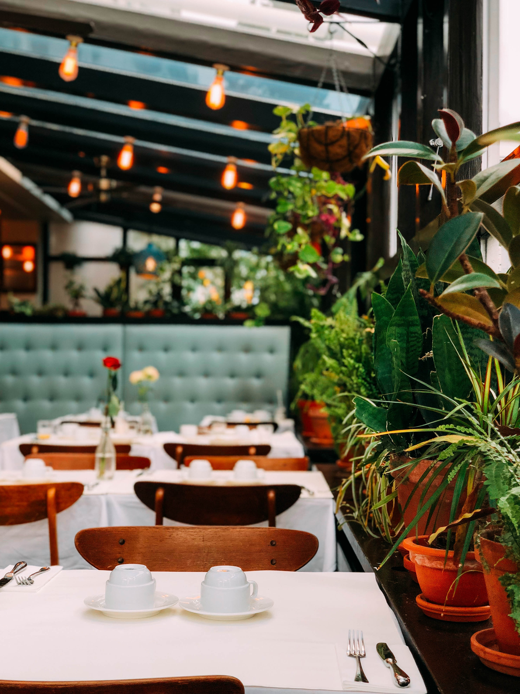
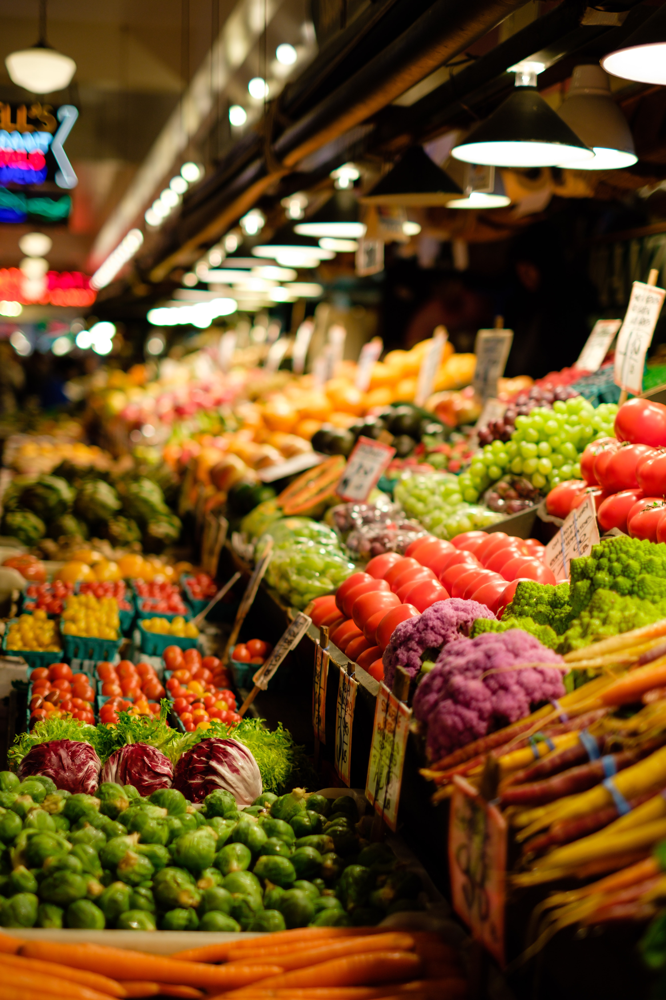
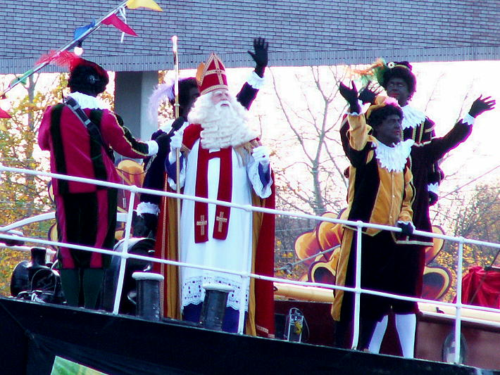

Door deze site te gebruiken, gaat u akkoord met onze cookies
Beverwijk
De leukste stad van Noord-Holland!
Welkom in Beverwijk!


Ongeveer twintig kilometer vanaf Amsterdam en vijftien kilometer vanaf Haarlem ligt een hele gezellige stad, Beverwijk.
In Beverwijk wonen maar liefst 41.039 inwoners, die verspreid wonen over de 20,09 km2 waaruit deze stad bestaat. Samen
met Heemskerk en Velsen vormt Beverwijk de samenwerkingsregio Ijmond.
Beverwijk staat vooral bekend om de zwarte markt, oftewel De Bazaar. De Bazaar is de grootste overdekte markt in Europa,
waardoor het elk weekend weer druk bezocht wordt door mensen vanuit heel Nederland en daarbuiten. De zwarte markt bestaat
uit meerdere overdekte hallen én buiten terrasjes, zodat u bij welk weer dan ook, altijd kunt genieten van De Bazaar.
Heeft geen zin om naar de markt te gaan? Geen zorgen, in Beverwijk is voor iedereen wat te doen. Zo beschikt Beverwijk
over een winkelstraat, een bioscoop, een auto- en meubelboulevard, een theater, een bibliotheek en talloze restaurantjes
en terrassen!
Beverwijk en Heemskerk
Naast Beverwijk ligt het gezellige Dorp Heemskerk. Net als Beverwijk beschikt Heemskerk over een winkelstraat. Waar de
winkelstraat van Beverwijk bestaat uit de wat grotere en bekende ketens, beschikt Heemskerk meer over wat kleinere en
beginnende ketens. Mede door deze kleine ketens en de winkelstraat die in een rondje loopt, is Heemskerk een heel gezellig
en sfeervol dorp.

Activiteiten
In zowel de stad als het dorp worden er regelmatig allerlei leuke activiteiten georganiseerd voor jong en oud georganiseerd.
Zo is er elk jaar in Heemskerk tijdens Halloween “Spooky Saturday”, in november is er een sinterklaasintocht, in december
wordt de “Santa Run” georganiseerd, en eens in de zoveel tijd komt er een groot podium in het centrum met live artiesten en
dansoptredens. In Beverwijk wordt er net zoals in Heemskerk een jaarlijkse sinterklaasintocht gehouden, maar worden er ook
andere evenementen georganiseerd, zoals “Vroege vogels”. Dit evenement begint om 6:00 ’s ochtends en duurt ongeveer 3 uur.
De winkels gaan deze dag extra vroeg open en om 6:00 krijg je op elke aankoop de hoogste korting. Elk uur dat verstrijkt wordt
de korting minder, waardoor het een echte race tegen de klok is om zoveel mogelijk korting op je aankopen te scoren!
Eropuit
Als er iets niet te vinden is in Beverwijk, dan heeft Heemskerk het wel. Wilt u een dagje weg met het hele gezin, de rijke
cultuur bekijken van Heemskerk en Beverwijk of eten is de beste restaurants? Dat kan! Hieronder staan alle bezienswaardigheden,
uitjes en restaurants op een rijtje.
Atletiekvereniging DEM is een hele gezellige sportclub die bedoelt is voor iedereen; jong en oud, met of zonder beperking, beginner
of al ervaren. Binnen atletiek is er voor ieder wat wils, zo is er een brede keuze uit diverse loop-, werp- en springonderdelen.
BHC Overbos is een hockeyclub uit Beverwijk, waar zowel prestatiehockey als recreatiehockey op alle niveaus wordt beoefend. De
hockeyclub beschikt over vier speelbanen van kunstgras, en een sfeervol clubhuis, waar altijd wat te doen is.
Bushido is een vereniging voor de vechtsporten judo en Braziliaans Jiu Jitsu. Of je nu technieken wil leren voor zelfverdediging,
voor het trainen voor Mixed Martial Arts wedstrijden of voor de conditionele workout, bij Bushido ben je aan het juiste adres!
De Kennemers
De Beverwijkse voetbalvereniging De Kennemers werd opgericht in 1918 en is daarmee de oudste voetbalvereniging in de regio. Er hangt
op deze vereniging een gezellige sfeer waar iedereen als een grote familie wordt gezien.
Bij de Heemskerkse tennisvereniging De Hulstenaar staat het plezier voorop en hier is dan ook iedereen welkom. Of je nou een beginner
bent of al ervaring hebt, je kan altijd terecht in een team dat competitief- of recreatiegericht is!
Bij zwemvereniging Oeza kun je leren zwemmen, in wedstrijdverband sporten of gewoon onder begeleiding lekker banen zwemmen. Kortom;
voor iedere leeftijd en zowel ervaren als onervaren zwemmers kunnen bij Oeza terecht!
Tafeltennisvereniging Rapidity
Vaak denken mensen bij tafeltennis vooral aan een ontspannende activiteit waarbij niet veel inspanning nodig is, maar als wedstrijdsport
is tafeltennis een zware sport die zowel lichamelijk als mentaal veel inspanning eist. Bij tafeltennisclub Rapidity wordt er één keer
in de week getraind en vindt er eens in de zoveel tijd wedstrijden en clubkampioenschappen plaats.
TOSS is een turnvereniging die opgericht is in 1996, toen twee verenigingen besloten te fuseren. Vanaf 1,5 jaar oud zijn kinderen al
welkom op deze vereniging, waar ze mee kunnen doen met bijvoorbeeld ouder en kind gym of peuter- en kleutergym.
Volleybalvereniging Jonas is een vrij jonge vereniging, die twee jaar geleden is opgericht. Bij volleybalvereniging Jonas wordt er op verschillende
niveaus gevolleybald. Zo is er de mogelijkheid om competitie of recreatief te spelen, en is er in de zomer de mogelijkheid om te
beachvolleyballen.
De Wijcker badmintonclub is een kleine, maar gezellige batmintonclub in Beverwijk, waar plezier en sportiviteit voorop staat. Elke dinsdag is de
vaste speelavond en je kan zelf bepalen hoe laat je begint, en hoe laat je eindigt met spelen.
Bushido Heemskerk
Bushido Heemskerk is een sportvereniging waar onder andere de sport Braziliaans Jiu Jitsu wordt beoefend.
Braziliaanse jiu jitsu is een afgeleide van “Jiu-do”, ofwel Judo. Braziliaans Jiu Jitsu is pas vijftien
jaar bekend in Nederland, maar behoord wel tot een van de snelst groeiende vechtsporten. De vechtsport is
onstaan toen een familie, die over het algemeen niet groot en sterk zijn, opzoek was naar de beste manier
om hun tegenstanders te verslaan. De uitkomst? Jiu Jitsu, waarbij de nadruk ligt op de grondgevechten in
tegenstelling tot Judo waar de focus ligt op de weptechnieken. Een BJJ vechter probeert via een dominante
positie op de grond zijn tegenstander via een heel scala aan klemmen en verwurgingen tot het zo gehete
“aftikken” te dwingen.
Hoewel BJJ de laatste jaren zeer in opkomst is als wedstrijdsport, is het in beginsel een zelfverdedigingskunst
die van praktische toepasbaarheid ‘op straat’ uitgaat. Hierbij kunnen technieken, mits juist uitgevoerd, een
fysiek minder sterk persoon helpen bij het overwinnen van sterkere en zwaardere tegenstanders.
Bij de sportvereniging Bushido wordt er lesgegeven volgens het lesplan van een van de meest succesvolle
vechters van de familie die Jiu Jutsu heeft ontdenkt, familie Gracie. Bij Bushido worden de trainingen
verzorgd door Sebastiaan Munter. Op 15-jarige leeftijd haalde hij zijn eerste zwarte band en op 17-jarige
leeftijd begon hij met het assisteren van zijn leraar bij de judolessen. Vanaf dat moment wist hij dat hij
niets anders wilde dan lesgeven en dat doet hij nu dan ook met veel liefde en passie voor de vechtsport.